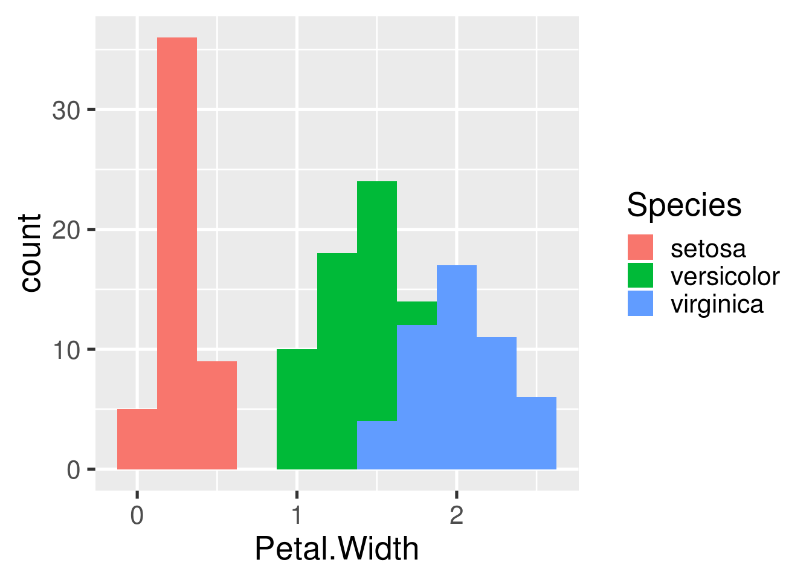

Example R Markdown drake file target
Run make.R to generate the output report.pdf and its dependencies. Because we use loadd() and readd() below, drake knows report.pdf depends on targets fit, and hist.
library(drake)
loadd(fit)
print(fit)
#>
#> Call:
#> lm(formula = Sepal.Width ~ Petal.Width + Species, data = data)
#>
#> Coefficients:
#> (Intercept) Petal.Width Speciesversicolor
#> 3.236 0.781 -1.501
#> Speciesvirginica
#> -1.844
readd(hist)
More:
- Walkthrough: this chapter of the user manual
- Slides: https://krlmlr.github.io/drake-pitch
- Code:
drake_example("main")